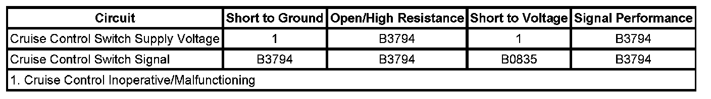
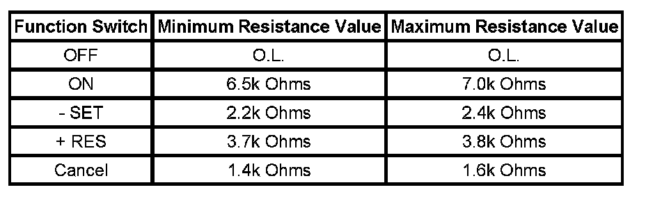

B3794
DTC B3794
DTC DESCRIPTOR
DTC B3794 08
Cruise Control Function Request Circuit Signal Invalid
DTC B3794 61
Cruise Control Function Request Circuit Actuator Stuck
DIAGNOSTIC FAULT INFORMATION

Perform the Diagnostic System Check - Vehicle prior to using this diagnostic procedure. Initial Inspection and Diagnostic Overview
CIRCUIT/SYSTEM DESCRIPTION
The cruise control switch is an input to the body control module (BCM). The BCM monitors the cruise control on/off, set/coast, resume/accelerate, and cancel switch signal circuit in order to detect when the driver has requested to perform a cruise control function. The BCM detects a specific voltage signal on the cruise control switch signal circuit when a switch is applied.
CONDITIONS FOR RUNNING THE DTC
- The ignition is ON.
- The cruise switch is ON.
CONDITIONS FOR SETTING THE DTC
- The BCM detects an invalid voltage signal on the cruise control + RES switch, - SET switch and the cancel signal circuit.
- The above condition is present for 0.5 second.
ACTION TAKEN WHEN THE DTC SETS
- The BCM stores the DTC information into memory when the diagnostic runs and fails.
- The malfunction indicator lamp (MIL) will not illuminate.
- The Cruise Control System is disabled.
CONDITIONS FOR CLEARING THE DTC
- The DTC becomes history when the conditions for setting the DTC are no longer present.
- The history DTC clears after 40 malfunction-free warm-up cycles.
- The BCM receives a clear code command from the scan tool.
CIRCUIT/SYSTEM VERIFICATION
1. Ignition ON, observe the scan tool Cruise Control Switch parameter in the BCM while pressing the various cruise control switches. The reading should be Error.
- If the Cruise Control Switch parameter toggles between On, Off, Resume, Set and Cancel accordingly with the depressed switches, then go to Testing for Intermittent Conditions and Poor Connections.
2. Go to Circuit/System Testing.
CIRCUIT/SYSTEM TESTING
CAUTION: Refer to SIR Caution.
Disable the inflatable restraint steering wheel module when performing this diagnostic. Refer to SIR Disabling and Enabling.
1. Ignition OFF, remove the inflatable restraint steering wheel module.
2. Disconnect the harness connector of the cruise control switch.
3. Ignition ON, measure for 10 volts or greater at the cruise control supply voltage circuit.
- If less than 10 volts, check for an open/high resistance or for a short to ground on the cruise control supply voltage circuit.
4. Ignition OFF, test for an open, for a high resistance, for a short to ground, or for a short to voltage in the cruise control switch signal circuit.
5. Test the component. If the circuits and the component tests are normal, replace the BCM.
COMPONENT TESTING
CAUTION: Refer to SIR Caution.
Disable the inflatable restraint steering wheel module when performing this diagnostic. Refer to SIR Disabling and Enabling.
IMPORTANT: The cruise control ON/OFF switch must be ON in order to properly measure the resistance of the - SET, the + RES, and the Cancel switches.
1. With the ignition OFF, remove the inflatable restraint steering wheel module.
2. With the ignition OFF, disconnect C277 at the inflatable restraint steering wheel module coil.
3. Measure the resistance between terminals 1 and 3 at the cruise control switch side of the connector. Individually activate and hold each cruise control function switch and compare the resistance reading to the values on the schematic for the ON/OFF, - SET, the + RES, and the Cancel switches.

- If any of the resistance measurements for the OFF, ON, - SET, + RES, and Cancel switches are not within the listed resistance values, replace the cruise control switch assembly.
REPAIR INSTRUCTIONS
Perform the Diagnostic Repair Verification after completing the diagnostic procedure.
- Steering Wheel Control Switch Assembly Replacement
- Control Module References for BCM replacement, setup, and programming. Programming and Relearning Verification Tests